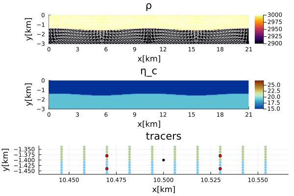
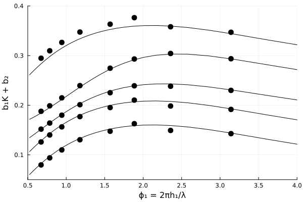

RTI - Growth Rate Benchmark
This script performs a benchmark for the growth rate of a Rayleigh–Taylor instability, following Gerya (2009). The benchmark is based on the analytical solution by Ramberg (1968) and is used to assess the accuracy of the velocity field in a purely gravity-driven flow.
Although small-amplitude perturbations can be analyzed in theory—enabled by the use of tracers and bilinear interpolation of density onto centroids—a relatively large perturbation amplitude is used here for practical implementation.
Let's load the required modules first.
using Plots
using ExtendableSparse
using GeoModBox
using GeoModBox.InitialCondition, GeoModBox.MomentumEquation.TwoD
using GeoModBox.AdvectionEquation.TwoD
using GeoModBox.Tracers.TwoD
using Base.Threads
using Printf, LinearAlgebraIn the following some parameters regarding the visualization can be edited.
# Plot fields for each individual model - yes or no
plot_fields =:no
# Save final figure
save_fig = 1
Pl = (
qinc = 5,
qsc = 100*(60*60*24*365.25)*5e1,
)Let's set the parameter for an initial cosinusoidal tracer perturbation for a two-layered model. For the benchmark analysis, the range of wavelenghts is defined as well.
# Define Initial Condition ========================================== #
Ini = (p=:RTI,)
# Perturbation wavelength [ m ]
λᵣ = [1 3 4 5 6 8 10 12 14]*1e3
# ------------------------------------------------------------------- #Now, one can set the physical parameters. Here, the range of the viscosity ration between the two layers is also defined.
# Physics =========================================================== #
g = 9.81 # Gravitational acceleration [ m/s^2 ]
# Lower layer ---
ρ₁ = 2900.0 # Density composition 1 [ kg/m^3 ]
η₁ = 1e19 # Viscosity composition 1 [ Pa s]
# Upper layer ---
ρ₀ = 3000.0 # Density composition 0 [ kg/m^3 ]
# ---
ρ = [ρ₀,ρ₁] # Density for phases
ηᵣ = [1e-6 1 10 100 500] # Viscosity ratio
phase = [0,1]
# ------------------------------------------------------------------- #In the following, the parameters for the analytical solution are initialized, some scaling parameters (b1 and b2) for the visualization, and the divisional factor for the perturbation wavelength (delfac)
# Plotting factors following Gerya (2009) --------------------------- #
b1 = [0.5 1 5 50 250]
b2 = [0.2 0.15 0.1 0.05 0]
# Divisional factor of the amplitude following Gerya (2009) --------- #
delfac = 15 #[15 150] # [150 1500] # 1500 15
ms = zeros(3)
ms = [6,4,2]
# Analytical Solution ----------------------------------------------- #
λₐ = collect(LinRange(0.5,18,51)).*1e3 # [ m ]
ϕ₁ = zeros(length(λₐ))
ϕ₂ = copy(ϕ₁)
c11 = copy(ϕ₁)
d12 = copy(ϕ₁)
i21 = copy(ϕ₁)
j22 = copy(ϕ₁)
# Arrays ---
PP = (
ϕ = [0.0],
K = [0.0],
Q = [0.0],
ϕₐ = zeros(length(λₐ)),
Kₐ = zeros(length(λₐ),length(ηᵣ)),
)
# ------------------------------------------------------------------- #
# Plot Settings ===================================================== #
q = plot()
# ------------------------------------------------------------------- #Define the geometry of the model domain.
# Geometry ========================================================== #
M = Geometry(
ymin = -3.0e3, # [ m ]
ymax = 0.0,
xmin = 0.0,
)
# ------------------------------------------------------------------- #If multiple perturbation amplitudes are specified, a loop is initiated over them. For each amplitude, a nested loop iterates over different viscosity contrasts. Within that loop the viscosity for the upper layer is calculated.
for k in eachindex(delfac)
for i in eachindex(ηᵣ)
# Physics =================================================== #
# 0 - upper layer; 1 - lower layer
η₀ = η₁*ηᵣ[i] # Viscosity composition 0 [ Pa s ]
η = [η₀,η₁] # Viscosity for phases
# ----------------------------------------------------------- #The variables required for the analytical solution are calculated for each model configuration.
@. ϕ₁ = (2*π*((M.ymax-M.ymin)/2))/λₐ
@. ϕ₂ = (2*π*((M.ymax-M.ymin)/2))/λₐ
@. c11 = (η₀*2*ϕ₁^2)/
(η₁*(cosh(2*ϕ₁) - 1 - 2*ϕ₁^2)) -
(2*ϕ₂^2)/
(cosh(2*ϕ₂) - 1 - 2*ϕ₂^2)
@. d12 = (η₀*(sinh(2*ϕ₁) - 2*ϕ₁))/
(η₁*(cosh(2*ϕ₁) - 1 - 2*ϕ₁^2)) +
(sinh(2*ϕ₂) - 2*ϕ₂)/
(cosh(2*ϕ₂) - 1 - 2*ϕ₂^2)
@. i21 = (η₀*ϕ₂*(sinh(2*ϕ₁) + 2*ϕ₁))/
(η₁*(cosh(2*ϕ₁) - 1 - 2*ϕ₁^2)) +
(ϕ₂*(sinh(2*ϕ₂) + 2*ϕ₂))/
(cosh(2*ϕ₂) - 1 - 2*ϕ₂^2)
@. j22 = (η₀*2*ϕ₁^2*ϕ₂)/
(η₁*(cosh(2*ϕ₁) - 1 - 2*ϕ₁^2)) -
(2*ϕ₂^3)/
(cosh(2*ϕ₂) - 1 - 2*ϕ₂^2)
@. PP.Kₐ[:,i] = -d12/(c11*j22 - d12*i21)
@. PP.ϕₐ = ϕ₁Since the analytical solution is independent of the perturbation amplitude, the loop over different amplitudes can be performed subsequently. Within that loop, the model domain needs to be first setup as well as the perturbation amplitude.
for j in eachindex(λᵣ)
# Perturbation properties ---
λ = λᵣ[j] # [ m ]
δA = -(M.ymax-M.ymin)/2/delfac[k] # Amplitude [ m ]
# ---
ar = Int64(round(2 * λ / (M.ymax-M.ymin))) # aspect ratio
M.xmax = (M.ymax-M.ymin)*ar
# ------------------------------------------------------- #
# Grid ================================================== #
NC = (
x = 50*ar,
y = 50,
)
NV = (
x = NC.x + 1,
y = NC.y + 1,
)
Δ = GridSpacing(
x = (M.xmax - M.xmin)/NC.x,
y = (M.ymax - M.ymin)/NC.y,
)
x = (
c = LinRange(M.xmin+Δ.x/2,M.xmax-Δ.x/2,NC.x),
ce = LinRange(M.xmin - Δ.x/2.0, M.xmax + Δ.x/2.0, NC.x+2),
v = LinRange(M.xmin,M.xmax,NV.x),
)
y = (
c = LinRange(M.ymin+Δ.y/2,M.ymax-Δ.y/2,NC.y),
ce = LinRange(M.ymin - Δ.x/2.0, M.ymax + Δ.x/2.0, NC.y+2),
v = LinRange(M.ymin,M.ymax,NV.y),
)
x1 = (
c2d = x.c .+ 0*y.c',
v2d = x.v .+ 0*y.v',
vx2d = x.v .+ 0*y.ce',
vy2d = x.ce .+ 0*y.v',
)
x = merge(x,x1)
y1 = (
c2d = 0*x.c .+ y.c',
v2d = 0*x.v .+ y.v',
vx2d = 0*x.v .+ y.ce',
vy2d = 0*x.ce .+ y.v',
)
y = merge(y,y1)
# ------------------------------------------------------- #Let's initialize all the required data array in the following.
# Allocation ============================================ #
D = (
ρ = zeros(Float64,(NC...)),
p = zeros(Float64,(NC...)),
cp = zeros(Float64,(NC...)),
vx = zeros(Float64,(NV.x,NV.y+1)),
vy = zeros(Float64,(NV.x+1,NV.y)),
Pt = zeros(Float64,(NC...)),
vxc = zeros(Float64,(NC...)),
vyc = zeros(Float64,(NC...)),
vc = zeros(Float64,(NC...)),
wt = zeros(Float64,(NC.x,NC.y)),
wtv = zeros(Float64,(NV.x,NV.y)),
ηc = zeros(Float64,NC...),
ηv = zeros(Float64,NV...),
)
# ------------------------------------------------------- #
# Needed for the defect correction solution ---
divV = zeros(Float64,NC...)
ε = (
xx = zeros(Float64,NC...),
yy = zeros(Float64,NC...),
xy = zeros(Float64,NV...),
)
τ = (
xx = zeros(Float64,NC...),
yy = zeros(Float64,NC...),
xy = zeros(Float64,NV...),
)
# ------------------------------------------------------- #Also one needs to set the velocity boudnary conditions.
# Boundary Conditions =================================== #
VBC = (
type = (E=:freeslip,W=:freeslip,S=:noslip,N=:noslip),
val = (E=zeros(NV.y),W=zeros(NV.y),S=zeros(NV.x),N=zeros(NV.x)),
)
# ------------------------------------------------------- #To setup the perturbation, the markers are initialized in the following.
# Tracer Advection ====================================== #
nmx,nmy = 5,5
noise = 0
nmark = nmx*nmy*NC.x*NC.y
Aparam = :phase
MPC = (
c = zeros(Float64,(NC.x,NC.y)),
v = zeros(Float64,(NV.x,NV.y)),
th = zeros(Float64,(nthreads(),NC.x,NC.y)),
thv = zeros(Float64,(nthreads(),NV.x,NV.y)),
)
MPC1 = (
PG_th = [similar(D.ρ) for _ = 1:nthreads()], # per thread
PV_th = [similar(D.ηv) for _ = 1:nthreads()], # per thread
wt_th = [similar(D.wt) for _ = 1:nthreads()], # per thread
wtv_th = [similar(D.wtv) for _ = 1:nthreads()], # per thread
)
MPC = merge(MPC,MPC1)
Ma = IniTracer2D(Aparam,nmx,nmy,Δ,M,NC,noise,Ini.p,phase;λ,δA)
# RK4 weights ---
rkw = 1.0/6.0*[1.0 2.0 2.0 1.0] # for averaging
rkv = 1.0/2.0*[1.0 1.0 2.0 2.0] # for time stepπng
# Count marker per cell ---
CountMPC(Ma,nmark,MPC,M,x,y,Δ,NC,NV,1)
# Interpolate from markers to cell ---
Markers2Cells(Ma,nmark,MPC.PG_th,D.ρ,MPC.wt_th,D.wt,x,y,Δ,Aparam,ρ)
Markers2Cells(Ma,nmark,MPC.PG_th,D.p,MPC.wt_th,D.wt,x,y,Δ,Aparam,phase)
Markers2Vertices(Ma,nmark,MPC.PV_th,D.ηv,MPC.wtv_th,D.wtv,x,y,Δ,Aparam,η)
@. D.ηc = 0.25 * (D.ηv[1:end-1,1:end-1] +
D.ηv[2:end-0,1:end-1] +
D.ηv[1:end-1,2:end-0] +
D.ηv[2:end-0,2:end-0])
# ------------------------------------------------------- #Now, one needs to define the parameters to solve the linear system of equations using the defec correction method.
# System of Equations =================================== #
# Iterations
niter = 10
ϵ = 1e-10
# Numbering, without ghost nodes! ---
off = [ NV.x*NC.y, # vx
NV.x*NC.y + NC.x*NV.y, # vy
NV.x*NC.y + NC.x*NV.y + NC.x*NC.y] # Pt
Num = (
Vx = reshape(1:NV.x*NC.y, NV.x, NC.y),
Vy = reshape(off[1]+1:off[1]+NC.x*NV.y, NC.x, NV.y),
Pt = reshape(off[2]+1:off[2]+NC.x*NC.y,NC...),
)
δx = zeros(maximum(Num.Pt))
F = zeros(maximum(Num.Pt))
# Residuals ---
Fm = (
x = zeros(Float64,NV.x, NC.y),
y = zeros(Float64,NC.x, NV.y)
)
FPt = zeros(Float64,NC...)
# ------------------------------------------------------- #Now,pne can solve the momentum and mass conservation equations.
# Momentum Equation ===
D.vx .= 0.0
D.vy .= 0.0
D.Pt .= 0.0
for iter=1:niter
# Initial Residual -------------------------------------- #
Residuals2D!(D,VBC,ε,τ,divV,Δ,D.ηc,D.ηv,g,Fm,FPt)
F[Num.Vx] = Fm.x[:]
F[Num.Vy] = Fm.y[:]
F[Num.Pt] = FPt[:]
@printf("||R|| = %1.4e\n", norm(F)/length(F))
norm(F)/length(F) < ϵ ? break : nothing
# Assemble Coefficients ================================= #
K = Assembly(NC, NV, Δ, D.ηc, D.ηv, VBC, Num)
# ------------------------------------------------------- #
# Solution of the linear system ========================= #
δx = - K \ F
# ------------------------------------------------------- #
# Update Unknown Variables ============================== #
D.vx[:,2:end-1] .+= δx[Num.Vx]
D.vy[2:end-1,:] .+= δx[Num.Vy]
D.Pt .+= δx[Num.Pt]
endFor visualization purposes, the centroid velocities are computed.
# ------------------------------------------------------- #
# Get the velocity on the centroids ---
for i = 1:NC.x
for j = 1:NC.y
D.vxc[i,j] = (D.vx[i,j+1] + D.vx[i+1,j+1])/2
D.vyc[i,j] = (D.vy[i+1,j] + D.vy[i+1,j+1])/2
end
end
@. D.vc = sqrt(D.vxc^2 + D.vyc^2)
# ---In the following, one defines the parameters to calculate the rising velocity at the tip of the perturbation in the center of the model domain. The vertical velocity at the perturbation tip is calculated using bilinear interpolation from surrounding velocity grid points.
xwave = (M.xmax-M.xmin)/2 # [ m ]
ywave = (M.ymax-M.ymin)/2 + δA
xn = Int64(floor((xwave+Δ.x/2)/Δ.x))
yn = Int64(floor(((M.ymax-M.ymin)-ywave)/Δ.y)) + 1
dx = (xwave+Δ.x/2)/Δ.x - xn
dy = abs(((M.ymax-M.ymin)-ywave)/Δ.y - yn)
wvy = (1.0-dx)*(1.0-dy) * D.vy[xn+1,yn] +
dx*(1.0-dy) * D.vy[xn+1+2,yn] +
(1.0-dx)*dy * D.vy[xn+1,yn-1] +
dx*dy * D.vy[xn+2,yn-1]
PP.Q[1] = (ρ₀-ρ₁)*(M.ymax-M.ymin)/2.0*g/2.0/η₁
PP.K[1] = abs(wvy)/abs(δA)/PP.Q[1]
PP.ϕ[1] = 2*π*(M.ymax-M.ymin)/2/λIf wanted, the density, tracer, and viscosity fields are plotted. To verify the position of the perturbation tip used for velocity interpolation, the tip (black circle) and surrounding vertical velocity grid points (red circles) are plotted over the tracer field. The plot is zoomed in for better visualization.
if plot_fields==:yes
p = heatmap(x.c./1e3,y.c./1e3,D.ρ',color=:inferno,
xlabel="x[km]",ylabel="y[km]",colorbar=true,
title="ρ",
aspect_ratio=:equal,xlims=(M.xmin/1e3, M.xmax/1e3),
ylims=(M.ymin/1e3, M.ymax/1e3),
layout=(3,1),subplot=1)
quiver!(p,x.c2d[1:Pl.qinc:end,1:Pl.qinc:end]./1e3,
y.c2d[1:Pl.qinc:end,1:Pl.qinc:end]./1e3,
quiver=(D.vxc[1:Pl.qinc:end,1:Pl.qinc:end].*Pl.qsc,
D.vyc[1:Pl.qinc:end,1:Pl.qinc:end].*Pl.qsc),
la=0.5,color="white",layout=(3,1),subplot=1)
scatter!(p,Ma.x[1:end]./1e3,Ma.y[1:end]./1e3,
ms=3,ma=0.5,mc=Ma.phase[1:end],markerstrokewidth=0.0,
xlabel="x[km]",ylabel="y[km]",colorbar=true,
title="tracers",label="",
xlims=(xwave/1e3-Δ.x/1e3*1.1, xwave/1e3+Δ.x/1e3*1.1),
ylims=(-ywave/1e3-Δ.y/1e3*1.1, -ywave/1e3+Δ.y/1e3*1.1),
layout=(3,1),subplot=3)
heatmap!(p,x.c./1e3,y.c./1e3,log10.(abs.(D.ηc)'),
color=reverse(cgrad(:roma)),
xlabel="x[km]",ylabel="y[km]",title="η_c",
clims=(15,27),
aspect_ratio=:equal,xlims=(M.xmin/1e3, M.xmax/1e3),
ylims=(M.ymin/1e3, M.ymax/1e3),colorbar=true,
layout=(2,1),subplot=2)
scatter!(p,(xwave/1.0e3,-ywave/1.0e3),
markersize=3,label="",color=:black,
layout=(3,1),subplot=3)
scatter!(p,(x1.vy2d[xn+1,yn]/1e3,y1.vy2d[xn+1,yn]/1e3),
markersize=3,label="",color=:red,
layout=(3,1),subplot=3)
scatter!(p,(x1.vy2d[xn+2,yn]/1e3,y1.vy2d[xn+2,yn]/1e3),
markersize=3,label="",color=:red,
layout=(3,1),subplot=3)
scatter!(p,(x1.vy2d[xn+1,yn+1]/1e3,y1.vy2d[xn+1,yn+1]/1e3),
markersize=3,label="",color=:red,
layout=(3,1),subplot=3)
scatter!(p,(x1.vy2d[xn+2,yn+1]/1e3,y1.vy2d[xn+2,yn+1]/1e3),
markersize=3,label="",color=:red,
layout=(3,1),subplot=3)
display(p)
end
scatter!(q,(PP.ϕ[1],b1[i]*PP.K[1] + b2[i]),
ms=ms[k],markershape=:circle,label="",
color=:black)
end # Loop λ - j
Figure 1. Example of a RTI model. Top: Centroid velocity arrows on top of the density field. Middle: Centroid viscosity. Bottom: Zoom of the tracer field on the tip of the perturbation at the center of the model domain. The black tracer marks the tip, and the red tracer mark the vertical velocity nodes from which the vertical velocity is interpolated onto the tip. The example is a model with a perturbation of $A=h_{1}/15$ and a wavelength of 12 km. The number of centroids in the vertical direction is 50. The number of horizontal centroids is related to the wavelength and aspect ratio of the model such that the resoluton is always the same in the horizontal and vertical direction for each model of the benchmark.
Finally, the rising velocity is plotted over the analytical solution for the given range of viscosity contrasts.
if k == 1
plot!(q,PP.ϕₐ,b1[i].*PP.Kₐ[:,i] .+ b2[i],color=:black,
xlabel="ϕ₁ = 2πh₁/λ",
ylabel="b₁K + b₂",
title="",
xlims=(0.5,4),ylims=(0.05,0.4),
label="")
end
end # Loop ηᵣ - i
end # Loop delfac - k The final figure is stored in the given directory.
if save_fig == 1
savefig(q,string("./examples/StokesEquation/2D/Results/RTI_Growth_Rate.png"))
else
display(q)
end
Figure 2.RTI Growth Rate. Growth rate of an initial cosinusoidal pertrubation of a two-layered system with different wavelengths $\lambda$. The growth rate is arbitrarily scalled by $b_1$ and $b_2$ for visualization purposes following the approach of Gerya (2000). The lines are the analytical solutions for different viscosity ratios $\eta_r$ and the black circles show the corresponding numerical results. The rising velocity is numerically calculated following the approach shown in Figure 1.